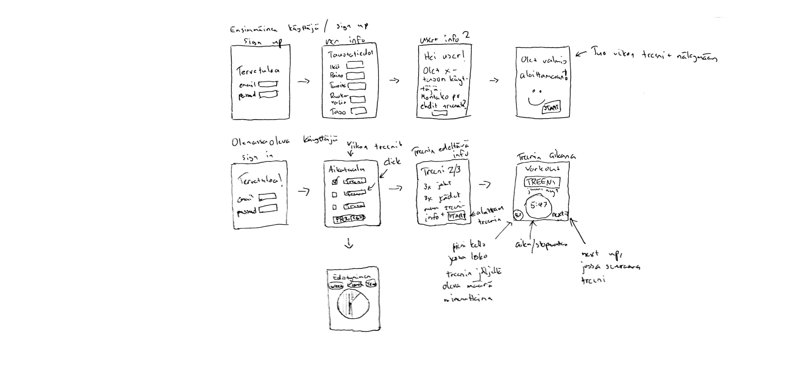

THE PROBLEM
Liiku
is an application prototype that wants to make fitness easy and accessible to everyone.
The fitness application market is oversaturated, which has lead to companies adding more and more intricate features to their apps.
While this can promote innovation, it makes using these apps difficult and demotivating for newcomers -
and at the same time might deter more experienced users with unnecessary features.
This project was made using
Figma,
GIMP,
and a pen and paper. A fully working prototype can be found by clicking
here,
or clicking the highlighted 'Liiku' above.
IDEA & WIREFRAMING
After the intial ideation, I made a simple wireframe using a pen & paper to get my initial visual ideas down. The wireframe consists of the most important features to be implemented into the prototype, including a login screen, user information tab, as well as the basic training-view.

LOGIN & SIGNUP
Liiku is designed to instantly build a tailored workout program according to user-submitted information. Besides just simple information such as age, weight, and height, I wanted to incorporate other factors that are crucial in sustaining a fitness schedule. This is why the app asks the user to also grade their own fitness level and goals, as well as give information about their diet. This way the app can assess what is the users current status regarding fitness, and what the user wants to get out of it.
MAIN SCREEN
For the main screen I wanted the user to have only the most relevant information displayed, without making any features hard to find.
A common reason why people stop exercising is because it takes up too much time. This is why it was important for me to display
three things on the main screen:
1. The workout program and progress for the week.
2. The day for the next workout and what it entails.
3. A big button that starts the workout.
Having this information displayed helps the user see and do most tasks they need to just by opening up the apps main screen.
They can check their weekly schedule, what is the next time they need to workout, and they can easily start their workout for the day.
More intricate information is reachable via buttons on the main screen, so nothing is hard to reach.

HWORKING OUT WITH LIIKU
The workout-view is designed to be interactive and guiding whilst exercising.
Once the user starts their workout, they're given the current task along with a preview of the remaining workout program.
This includes the name of the exercise, a visual cue, repetition amount, remaining sets, as well as the next moveset.
Along with these the user is shown a stopwatch for the workout as well as an option to sync-up their smartwatch to show heartrate in Beats Per Minute.
The user can also, at any time pause the workout if they need to.
The workout-view is designed to not only give sufficient guidance and information to the user, but to also give space for the exercise at hand.
In a way it is taking the responsibility of a personal trainer, who tells you what to do, whatäs next, and when to take a break. The workout intensity
and schedule are customized from the initial information given by the user, but can be changed later according to success in given exercises.

SHARING WORKOUTS AND OTHER SOCIAL FEATURES
Liiku makes exercise fun, which is why I added a social feature that incorporates a social aspect to working out. The user has full-fledged, albeit not-forced, access to quality social components. After workouts you can share and compare with friends, with an added option to share workouts on popular social media apps. People should be proud of themselves after doing a good workout, and Liiku gives that opportunity to the users.

QUALITY OF LIFE FEATURES
Some QOL features were added just to materialize functions and make the overall prototype smooth to use and complete.
The schedule shows a more detailed view of the upcoming workout types and days.
It utilizes simple color-coding to easily show information to the user about what they can expect to do and when.
From the schedule the user can delete or add more workouts as they see fit.
The settings and edit profile -views give easy-to-access information and zustomization options to the user.
The settings-view also holds information about the app version, as well as legal information regarding terms and conditions and
privacy policy.
A dark-mode was added for further customization, as well as accessibility.
MOTIFS, COLORS, DESIGN CHOICES, INTEGRITY ETC.